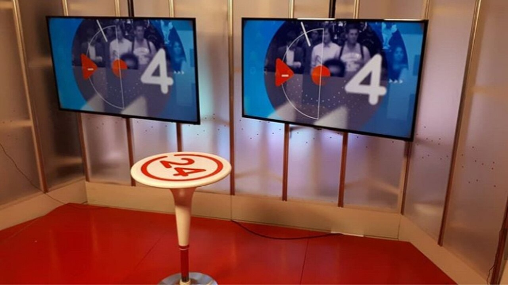

Categoría: Historia de la televisión
La televisión latinoamericana durante los años 2010

Al comenzar los años 2010, la televisión latinoamericana combinaba señales abiertas analógicas, televisión por suscripción y una digitalización que avanzaba a ritmos distintos. En las grandes ciudades era cada vez más visible la pantalla plana y la conexión a Internet, mientras que la cobertura, el precio de los equipos y la disponibilidad de banda ancha seguían siendo muy desiguales. La década no fue una sustitución instantánea de un medio por otro, sino una convivencia de tecnologías y formas de acceso.
Las diferencias nacionales fueron decisivas. Brasil impulsó su estándar de televisión digital basado en ISDB-T, México adoptó el estándar ATSC y otros países eligieron variantes de ISDB-T, DVB-T o ISDB-Tb según sus políticas y acuerdos. Las fechas de prueba, despliegue, cobertura y apagón analógico no coincidieron, por lo que no es correcto describir una única transición latinoamericana.
Los televisores de tubo de rayos catódicos (CRT) fueron cediendo espacio a equipos LCD y, posteriormente, LED. Las pantallas planas ocupaban menos espacio y facilitaban la conexión de consolas, reproductores y decodificadores. Hacia el final de la década también se difundieron modelos con conexión a Internet y funciones de reproducción de archivos, aunque su disponibilidad dependió del mercado y del poder adquisitivo de cada país.
La resolución pasó a formar parte de la decisión de compra: la alta definición y, en una etapa posterior, los televisores 4K aparecieron primero como productos de mayor precio. La presencia de una pantalla capaz de mostrar HD no significaba que todos los canales, operadores o contenidos del hogar transmitieran en esa resolución.
La televisión digital terrestre (TDT) permitió mejorar el uso del espectro y ofrecer, según el estándar y el diseño regulatorio, mejor calidad de imagen, más canales o servicios complementarios. Para recibirla se necesitaba un televisor compatible o un decodificador, además de cobertura local. Por ello, la transición exigió políticas públicas, inversiones de los operadores e información a los hogares.
Brasil desplegó el sistema brasileño de televisión digital (SBTVD-T) de forma progresiva; México desarrolló su transición bajo el estándar ATSC; Argentina, Chile, Colombia, Perú y otros países siguieron sus propios calendarios y decisiones regulatorias. Las fechas de inicio de emisiones, zonas cubiertas y apagones variaron entre países y, en algunos casos, entre ciudades. La cronología detallada de cada territorio debe consultarse en el regulador nacional correspondiente.
El cable y el satélite continuaron siendo importantes durante la década, aunque dejaron de ser las únicas vías para ampliar la oferta. Los operadores introdujeron paquetes digitales, guías electrónicas, grabadores y servicios de video bajo demanda en algunos mercados. La televisión satelital llegó a zonas donde el tendido de cable era más difícil, mientras el cable mantuvo una fuerte presencia en áreas urbanas con infraestructura.
La programación de pago se organizó alrededor de noticias, deportes, cine, música, documentales y canales infantiles. Las señales internacionales podían compartir una marca y parte de su catálogo, pero sus horarios, anuncios, doblajes, subtítulos y disponibilidad dependían de los operadores y de cada país. La expansión no alcanzó de la misma manera a hogares urbanos, rurales o de bajos ingresos.
La HD se extendió en eventos deportivos, noticieros, series y producciones de ficción, primero en servicios de pago y después en un número creciente de señales abiertas digitales. El cambio comprendía cámaras, estudios, enlaces, almacenamiento y transmisores, no solo la compra de un televisor nuevo. En consecuencia, una misma cadena podía ofrecer contenidos con calidades diferentes durante la transición.
La adopción fue gradual: los grandes mercados y los operadores con más recursos pudieron acelerar la renovación de equipos, mientras otras emisoras conservaron flujos de producción o distribución en definición estándar. Las transmisiones HD y su alcance concreto deben documentarse por país, operador y año.
La televisión abierta mantuvo noticieros, telenovelas, concursos, programas de variedades, ficción seriada y deportes, pero ajustó formatos y horarios ante una oferta más fragmentada. Las productoras combinaron títulos nacionales, coproducciones y adquisiciones extranjeras. El auge de los realities y de los formatos adaptados mostró la circulación internacional de modelos, aunque cada cadena los reinterpretó según su audiencia y sus condiciones de producción.
Las señales de pago profundizaron la segmentación por género y edad. Al mismo tiempo, los canales empezaron a publicar avances, clips y contenidos complementarios en sus sitios y redes sociales. Esto amplió la conversación alrededor de los programas sin eliminar la importancia de la emisión lineal.
Durante la década, el video en línea pasó de ser una experiencia asociada a clips y sitios web a incluir catálogos bajo demanda y servicios por suscripción. Netflix inició su expansión en Latinoamérica en 2011; más tarde se sumaron servicios locales, plataformas de grupos de medios y ofertas internacionales. La velocidad de esta expansión dependió de la banda ancha, los métodos de pago, los acuerdos de derechos y la disponibilidad de dispositivos compatibles.
El streaming compitió con la televisión tradicional por el tiempo de atención y por ciertos estrenos, pero no la reemplazó de forma uniforme. La televisión abierta siguió siendo relevante para noticias, acontecimientos en directo y contenidos de amplio alcance; el cable y el satélite conservaron suscriptores; y las plataformas construyeron sus catálogos de manera distinta en cada mercado.
El mando a distancia convivió con teléfonos inteligentes, tabletas y ordenadores. Ver un programa dejó de limitarse al horario de emisión para incluir grabaciones, repeticiones, sitios web, aplicaciones y consumo bajo demanda. Las redes sociales introdujeron conversaciones simultáneas y nuevas formas de promoción, especialmente entre públicos jóvenes.
Estos cambios no fueron universales. La calidad y el precio de la conexión, la disponibilidad de datos móviles, la edad, los ingresos y la ubicación geográfica condicionaron la posibilidad de ver contenidos en línea. El consumo conectado convivió con prácticas tradicionales y con el visionado colectivo de la televisión abierta.
Los años 2010 fueron una década de transición tecnológica, industrial y cultural. Los televisores CRT fueron desplazados progresivamente por pantallas planas, la TDT avanzó mediante calendarios nacionales, la HD se incorporó a más producciones y el streaming alteró la relación entre programación y horario. Sin embargo, la historia regional está hecha de ritmos diferentes: ningún país adoptó todas las tecnologías al mismo tiempo ni todos los hogares accedieron a ellas en iguales condiciones.
Fuentes y referencias
- Unión Internacional de Telecomunicaciones (UIT), Digital broadcasting. Marco institucional para la digitalización y el uso del espectro.
- Agência Nacional de Telecomunicações (Anatel), televisión digital en Brasil. Fuente oficial para el contexto regulatorio brasileño; los hitos locales deben comprobarse en documentación específica.
- Instituto Federal de Telecomunicaciones (IFT), Televisión Digital Terrestre. Información oficial sobre la transición mexicana.
- Subsecretaría de Telecomunicaciones de Chile (SUBTEL), televisión digital. Información oficial sobre el proceso chileno.
- CEPAL, Sociedad de la información. Contexto regional para conectividad, brechas digitales y acceso a tecnologías.
- Netflix, “Netflix launches in Latin America and the Caribbean”. Anuncio corporativo de la expansión regional en 2011.
- Las fechas exactas de adopción, cobertura, apagón analógico, penetración de HD y uso de streaming por país requieren contrastarse con informes nacionales de reguladores y estadísticas oficiales; quedan pendientes de investigación comparada.